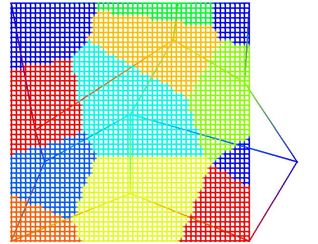
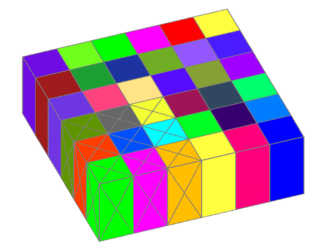

interpolate / intrp_method / cmosink, attsink / 1,0,0 / cmosrc, attsrc /
[tie_option] [flag_option] [keep_option] [intrp_function]
Parameters appearing after the source cmo attribute name are optional.
intrp_method is the choice of interpolation methods. These methods evolved from methods available in the doping command. The map method replaces doping/integer1 which copied source itetclr values to sink imt values. The voronoi method replaces doping/integer2 which copied nearest node source imt to sink imt. continuous evolved from the doping/table command. These commands are still similar to the old versions except that they have been generalized to include user chosen attributes and more element types. The choices for intrp_method are as follows:
map - For each sink point, search source cmo for an enclosing element. Copy the found source element value to the sink attribute. The source attribute is of type element. To copy from a source attribute of type node, use voronoi method.
voronoi - For each sink point, search the source cmo for a nearest node. Copy found source node value to the sink attribute. The source attribute is of type node. To copy from a source attribute of type element, use map method. By selecting the nearest source points, Voronoi regions are generated around each sink point. The sink point (node or centroid) is given the value of the attribute associated with the Voronoi generating point whose Voronoi cell the sink point lands in.
continuous - For each sink point, search the source cmo for an enclosing element. Use the vertices of enclosing element to interpolate a value on to the sink point. The source attribute is of type node. The interpolation is the sum of vertice values multiplied by the relative volume of elements formed by the sink point location on or inside the found element. The element is divided into volumes as determined by the sink point location and its relationship to the vertices of the enclosing element. A triangle becomes three triangles each with a vertices on the sink point. A quad becomes four quads. A tet becomes four tets. WARNING: A hex becomes 8 hexs which depends on orthogonal hexs and so is not currently supported. Use hextotet to convert hex elements to tets. Each vertice value of the found element is multiplied by these relative volumes. The assigned sink point value is the sum of these values divided by the number of element vertices. The interpolation function belonging to the attribute is applied to the vertice values before being summed. These interpolate types include LINEAR, ASINH, and LOG. Other interpolate functions such as min, max, and copy pass the value unchanged. See the cinterpolate() routine for how these interpolation types are handled. The final value of the sink point has the inverse function operation applied.
default - If source attribute is element type then use map. If source attribute is node type then use continuous.
cmosink, attsink are the cmo name and attribute name to write interpolated values into. The interpolation are applied to the points of the sink cmo. If the sink attribute is element type, centroids are calculated for each element and these are used for the interpolation methods. All integer attributes are converted to double for the interpolation routines. The interpolated values are then converted to integer if the sink attribute is integer.
indexed_set is the set of sink nodes or elements to write interpolated values to. 1,0,0 will select all sink nodes or elements.
cmosrc, attsrc are the cmo name and attribute
name are the cmo and attribute to interpolate from. Points from the sink
grid will be located within source elements or nearest source nodes depending
on the method used.
The following parameters are optional for the command interpolate.
tie_option provides a method of choice when multiple candidates are found for nearest node or enclosing element. Along with kdtree search, nearestpoint() and retrieve_within_eps() routines return a list of candidate objects for a sink point. These can be either a list of closest points, or a list of elements the point is on or inside. tie_option chooses one candidate from the possible candidates. The result is a one-to-one correspondence with each sink point paired with a single source node or a single source element.
tiemax selects the maximum value from candidate nodes or elements. This is the default selection.
tiemin selects the minimum value from candidate nodes or elements.
flag_option is the value used to initialize the sink attribute. These flag values indicate either that there was an error and a value could not be written to the sink attribute. The kdtree element search will assign a flag value if a sink point is located outside the source grid.
plus1 will assign a flag value of maximum source value plus 1.
nearest/near_attribute will find the nearest source node and use the node's attribute value as the flag value. The keyword nearest must be followed with the name of the source node attribute to use for the flag values.
flag_option given as an integer or real value will use the user's numeric value for the flag assignments.
keep_option is used during multiple calls to interpolate with the same two grids. It keeps attributes created during the search routines and uses these attributes to look up associated node or element numbers. The interpolate command uses kdtree to create sink attributes that pair sink points to associated source node or element numbers. If map or continuous methods are used, the element attribute named el_gtg will be created. If voronoi or the flag_option nearest are used, the node attribute named pt_gtg will be created.
delatt deletes any attributes created during the kdtree searches. By default these attributes are removed.
keepatt keeps any attributes created during the kdtree searches. The attribute names are pt_gtg for nearest node numbers, and el_gtg for enclosing element numbers.
intrp_function replaces the interpolation
function associated with the sink attribute. This interpolation function
is applied to the final interpolated field value. Valid interpolate functions
are linear, asinh, log, copy, sequence, min, incmin, max, incmax, and,
or, user.
Functions such as min and max pass the interpolation value unchanged.
The following tables identify what combinations of methods, options, and element types are supported with the command interpolate.
This table indicates the type of attributes that can be used with the
interpolation methods. If a sink attribute is of type element,
centroids are calculated for each sink element and used for the interpolation
methods.
| SOURCE
node |
SOURCE
element |
|
| SINK | ||
| map node | no | yes |
| map element | no | yes |
| continuous node | yes | no |
| continuous element | yes | no |
| voronoi node | yes | no |
| voronoi element | yes | no |
This table shows supported applications for each of the interpolation
methods.
(parenthesis) means the option should work, but is not untested
NOT means Not Supported
| MAP
copy element value to enclosed point |
CONTINUOUS
interpolate element nodes to enclosed point |
VORONOI
copy nearest node value |
|
| source
elements |
tri, quad, hex, tet, (pyr), (pri), (line) | tri, quad, NOT hex, tet, (pyr), (pri), (line) | tri, quad, hex, tet, (pyr), (pri), (line), (pnt) |
| sink
elements |
tri, quad, hex, tet, (pyr), (pri), (line), (pnt) | tri, quad, hex, tet, (pyr), (pri), (line), (pnt) | tri, quad, hex, tet, (pyr), (pri), (line), (pnt) |
| source
attribute |
element | node | node |
| sink
attribute |
node or element (centroid) | node or element (centroid) | node or element (centroid) |
| source
attribute type |
integer or double | integer or double | integer or double |
| sink
attribute type |
integer or double | NOT integer, double | integer or double |
| interpolation
function |
linear, log, sinh
all others pass value unaltered |
linear, log, sinh
all others pass value unaltered |
linear, log, sinh
all others pass value unaltered |
| tiebreaker | tiemin or tiemax | tiemin or tiemax | tiemin or tiemax |
| error flag | plus1, nearest, or user value | plus1, nearest, or user value | plus1 or user value |
| added
attributes |
keepatt creates attribute el_gtg |
keepatt creates attribute el_gtg |
keepatt creates attribute pt_gtg |
FORMAT:
interpolate / intrp_method / cmosink, attsink / 1,0,0 / cmosrc, attsrc / &
[tie_option] [flag_option] [keep_option] [intrp_function]interpolate | intrp / map | voronoi | continuous | default / &
cmosink, attsink / 1,0,0 / cmosrc, attsrc / [ tiemin | tiemax ] &
[ flag_value | plus1 | nearest, near_attribute ] [ keepatt | delatt ] [ intrp_function ]
EXAMPLES:
interpolate / map / cmo_sink imt /1,0,0/ cmo_src itetclr
For each node in cmo_sink find an enclosing element from mesh cmo_src. Assign the element's itetclr value to the corresponding imt attribute of cmo_sink.
interpolate/ map / cmo_sink Pval /1,0,0/ cmo_src Vval / tiemin, log
This command will assign source Vval values to sink Pval for elements enclosing cmo_sink points. If the sink point is found within more than one element, the min value of the candidate elements will be chosen. Since the interpolation function "log" is named, it will be applied to the source Vval value before being written to sink attribute Pval.
interpolate/ voronoi / cmo_sink imt /1,0,0/ cmo_src imt
For each node in cmo_sink, find the closest node in cmo_src. Assign the imt value from the closest cmo_src node to the imt attribute of cmo_sink.
interpolate/ continuous / cmo_sink xval /1,0,0/ cmo_src Pv
For each node in cmo_sink, find a cmo_src element the node is inside. Interpolate the element node values in Pv on to the sink point and write to the sink attribute xval.
interpolate/ map /cmo_sink imt /1,0,0/ cmo_src itetclr / nearest, imt / keepatt
interpolate/ map /cmo_sink imtreal /1,0,0/ cmo_src itetreal / nearest, imtreal
The first call to interpolate will assign itetclr values from source elements to imt in the sink cmo for points inside the source elements. Any sink point not inside the source grid will be assigned the imt value of the nearest source point. Since keepatt is set, both attributes pt_gtg and el_gtg will be kept as sink cmo attributes and hold the node and element numbers for each sink point.
The second call to interpolate will find the sink attributes pt_gtg and el_gtg. The nearest point and enclosing element kdtree searches will be skipped. This time the element value in attribute itetreal will be assigned to the sink node attribute imtreal. For points outside the grid, values from nearest node attribute imtreal will be used. Note that the delatt keyword does not have to exist, the interpolate attributes are always deleted unless the keyword keepatt is used.
| 
Example 1: interpolate / voronoi Copy nearest source node value to sink point |

Example 2: interpolate / map Copy source element value to enclosed sink point |

Example 3: interpolate / continuous Interpolate source element vertices to sink point |
{kind=link}
{kind=link}